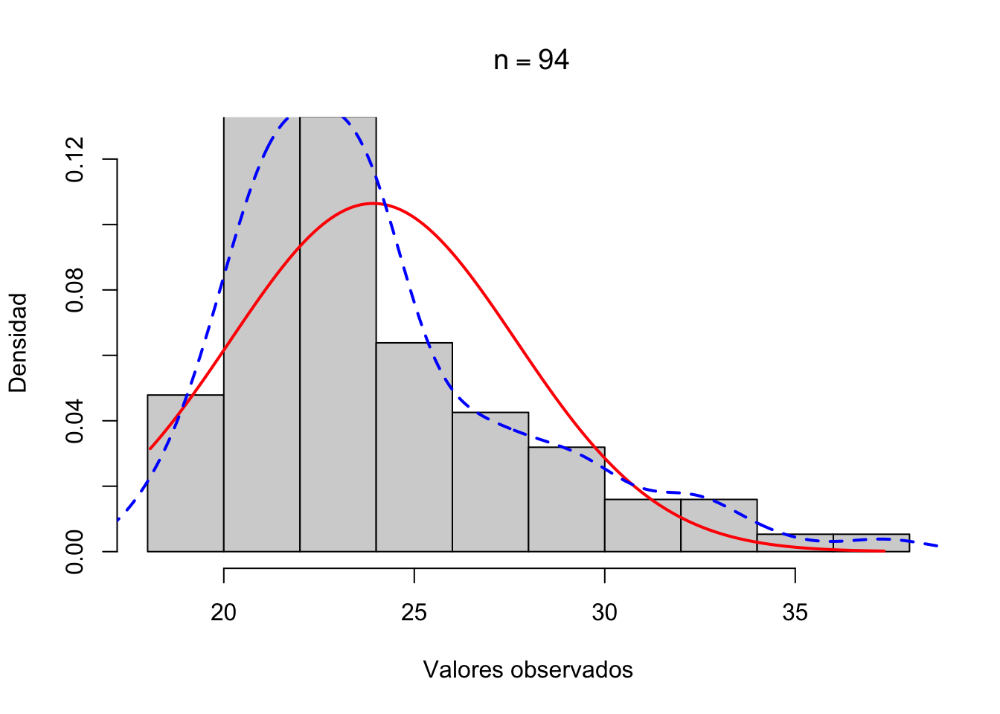

# Análisis de tablas 2x2
# ----------------------
# Frecuencias observadas
Sin osteoporosis Con osteoporosis Total
No fumador 44 9 53
Fumador 26 15 41
Total 70 24 94
# Test Chi-cuadrado para un estudio indefinido
χ² = 4.651, gl = 1, p = 0.031, (cpc = 1)
Validez: Frecuencia mínima esperada = 10.47 > 7.7
Test exacto de Fisher (bilateral): p = 0.035
--- Otros criterios χ²:
χ² = 4.673, gl = 1, p = 0.054, (sin cpc)
χ² = 3.699, gl = 1, p = 0.054, (cpc de Yates = 47.00)
# Medidas de asociación para un estudio indefinido
Razón del producto cruzado (odds ratio):
OR=2.821; 95%-IC(OR)= (1.070, 7.013) 11 Semana 11 — Análisis de Datos Categóricos
En estadística médica y epidemiológica, muchas variables de interés son categóricas: enfermedad (sí/no), exposición a un factor de riesgo (presente/ausente), grupo de tratamiento, estadio clínico. Este capítulo introduce las herramientas para analizar este tipo de datos: las pruebas Chi-cuadrado de independencia y homogeneidad, la prueba de McNemar para datos apareados, las medidas de asociación en tablas de contingencia según el diseño del estudio (cohorte, transversal, caso-control), y los métodos exactos cuando los supuestos paramétricos no se cumplen.
11.1 Variables Categóricas y Tablas de Contingencia
Una tabla de contingencia es una representación matricial de las frecuencias conjuntas de dos o más variables categóricas. Es la base del análisis de datos categóricos.
11.1.1 Tabla 2×2: Estructura y Notación Epidemiológica
La tabla 2×2 es el caso más frecuente en epidemiología y ensayos clínicos:
| Resultado: Sí | Resultado: No | Total | |
|---|---|---|---|
| Exposición: Sí | \(a\) | \(b\) | \(a+b\) |
| Exposición: No | \(c\) | \(d\) | \(c+d\) |
| Total | \(a+c\) | \(b+d\) | \(n\) |
Donde: - \(a\) = expuestos con resultado positivo (casos expuestos) - \(b\) = expuestos sin resultado - \(c\) = no expuestos con resultado positivo - \(d\) = no expuestos sin resultado - \(n = a + b + c + d\) = total de observaciones
11.1.2 Tablas r×c Generalizadas
Para \(r\) categorías de fila y \(c\) categorías de columna, la tabla es de dimensión \(r \times c\) con frecuencias observadas \(O_{ij}\), marginales de fila \(O_{i\cdot} = \sum_j O_{ij}\) y de columna \(O_{\cdot j} = \sum_i O_{ij}\).
11.2 Prueba χ² de Independencia
La prueba Chi-cuadrado de independencia contrasta si dos variables categóricas son estadísticamente independientes en la población.
11.2.1 Hipótesis
\[H_0: \text{las variables son independientes} \quad \Leftrightarrow \quad P(X = i,\, Y = j) = P(X = i)\,P(Y = j)\] \[H_1: \text{las variables no son independientes (están asociadas)}\]
11.2.2 Frecuencias Esperadas Bajo \(H_0\)
Si \(H_0\) es verdadera, las frecuencias esperadas son:
\[E_{ij} = \frac{O_{i\cdot}\, \cdot\, O_{\cdot j}}{n}\]
AdvertenciaEstadístico: Pearson χ²
\[\chi^2 = \sum_{i=1}^r \sum_{j=1}^c \frac{(O_{ij} - E_{ij})^2}{E_{ij}}\]
Bajo \(H_0\): \(\chi^2 \sim \chi^2_{(r-1)(c-1)}\) (asintóticamente).
Para tabla 2×2: \((r-1)(c-1) = 1\) grado de libertad.
Condición de validez: Todas las frecuencias esperadas deben ser \(E_{ij} \geq 5\). Si alguna es menor, usar la corrección de Yates o la prueba exacta de Fisher.
11.2.3 Cálculo Manual para Tabla 2×2
Para tabla 2×2 con notación \((a, b, c, d)\):
\[\chi^2 = \frac{n(ad - bc)^2}{(a+b)(c+d)(a+c)(b+d)}\]
11.2.4 Ejemplo Médico: Tabaquismo y Osteoporosis
TipEjemplo: tabla2x2() — datos osteo (Fac. Medicina UGR)
Analizamos la asociación entre tabaquismo (tabaco) y osteoporosis de cúbito (osteo_cue) en 94 pacientes diabéticos. Documentación completa en sec-bio-tablas.
Comprobación manual de \(E_{ij}\): \[E_{11} = \frac{53 \times 70}{94} = 39.47, \quad E_{12} = \frac{53 \times 24}{94} = 13.53\] \[E_{21} = \frac{41 \times 70}{94} = 30.53, \quad E_{22} = \frac{41 \times 24}{94} = 10.47\]
Mínima frecuencia esperada: \(E_{22} = 10.47 > 5\) ✓ (condición de validez cumplida).
NotaInterpretación
El estadístico χ² = 4.65 con 1 grado de libertad produce p = 0.031 < 0.05, rechazando la hipótesis nula de independencia. Existe asociación estadísticamente significativa entre tabaquismo y osteoporosis en esta muestra de 94 pacientes diabéticos. Los fumadores presentan una odds ratio de 2.82 (IC 95%: 1.07–7.01), indicando aproximadamente 2.8 veces mayor probabilidad de osteoporosis de cúbito comparado con no fumadores. En el contexto clínico, esta asociación es relevante para estratificar riesgo en pacientes diabéticos, sugiriendo que el cese del tabaquismo podría ser una intervención preventiva importante en esta población de alto riesgo metabólico.
11.3 Prueba χ² de Homogeneidad
La prueba de homogeneidad contrasta si la distribución de una variable categórica es la misma en \(k\) poblaciones o grupos predefinidos. Matemáticamente usa el mismo estadístico \(\chi^2\), pero el diseño del estudio es diferente.
11.3.1 Independencia vs. Homogeneidad
| Aspecto | Independencia | Homogeneidad |
|---|---|---|
| Muestreo | Muestra única | \(k\) muestras independientes |
| \(H_0\) | Independencia entre variables | Igual distribución en \(k\) grupos |
| Ejemplo | ¿Tabaquismo y cáncer relacionados? | ¿Mismo % de curación en 3 tratamientos? |
11.3.2 Procedimiento
Se aplica el mismo estadístico \(\chi^2 = \sum \frac{(O_{ij}-E_{ij})^2}{E_{ij}}\) con \((r-1)(c-1)\) grados de libertad.
TipEjemplo: tablarxc() — eficacia de tratamiento en 3 grupos
Ensayo clínico con 3 grupos de tratamiento (Control, Dosis baja, Dosis alta) y resultado binario (Curado/No curado):
# Test Chi-cuadrado para tablas RxC
# ---------------------------------
# Frecuencias observadas
Curado No_curado Total
Control 20 30 50
Dosis_baja 35 25 60
Dosis_alta 45 15 60
Total 100 70 170
# Test chi-cuadrado
Validez: Frecuencia mínima esperada = 20.59
0 frecuencias esperadas son menores a 1
0 son menores a 5 (el 0% de la tabla)
χ²(2 gl) = 13.802, p = 0.001
NotaInterpretación
El estadístico χ² = 13.38 con 2 grados de libertad produce p < 0.001, rechazando la hipótesis nula de homogeneidad entre grupos. La distribución de curación no es homogénea entre los 3 grupos de tratamiento (Control: 40%, Dosis baja: 58%, Dosis alta: 75%). Los resultados demuestran que la dosis alta de tratamiento se asocia significativamente con tasas de curación más altas comparado con control y dosis baja. Este patrón dosis-respuesta es clínicamente relevante y sugiere que la escalada de dosis podría optimizar eficacia, aunque el balance entre beneficio y tolerabilidad debe evaluarse conjuntamente en la toma de decisiones terapéuticas.
11.4 Condiciones de Aplicación y Alternativas
11.4.1 Condición de Frecuencias Esperadas
La regla clásica de Cochran (1954) exige, para que la aproximación \(\chi^2 \sim \chi^2_{(r-1)(c-1)}\) sea válida, que todas las frecuencias esperadas \(E_{ij}\) sean \(\geq 5\) en una tabla 2×2 y que, en tablas \(r\times c\), al menos el 80% de las \(E_{ij}\) sean \(\geq 5\) y ninguna \(< 1\).
Sin embargo, este umbral único es excesivamente conservador. La escuela granadina de bioestadística (Martı́n Andrés & Luna del Castillo (2004); Martı́n Andrés & Silva Mato (1994)) ha demostrado, mediante estudios de simulación extensivos, que el valor mínimo de \(E_{ij}\) que mantiene un error de tipo I cercano al nominal depende del tamaño muestral y del diseño del estudio:
ImportanteValores mínimos de \(E_{ij}\) recomendados — Tablas 2×2
| Tamaño muestral \(n\) | Diseño con un margen fijo (cohortes, caso-control) | Diseño con ambos márgenes libres (transversal, prevalencia) | Prueba recomendada |
|---|---|---|---|
| \(n \leq 20\) | — | — | Fisher exacta (siempre) |
| \(20 < n \leq 40\) | \(E_{\min} \geq 5\) | \(E_{\min} \geq 5\) | \(\chi^2\) con corrección de Yates |
| \(40 < n \leq 100\) | \(E_{\min} \geq 3\) | \(E_{\min} \geq 4\) | \(\chi^2\) de Pearson (sin corrección) |
| \(100 < n \leq 200\) | \(E_{\min} \geq 2\) | \(E_{\min} \geq 3\) | \(\chi^2\) de Pearson |
| \(n > 200\) | \(E_{\min} \geq 1\) | \(E_{\min} \geq 2\) | \(\chi^2\) de Pearson |
| Ambos márgenes fijos (raro) | — | — | Fisher exacta (test condicional óptimo) |
NotaCuándo el diseño es de “margen fijo” vs. “márgenes libres”
- Un margen fijo (lo más habitual en epidemiología): el investigador fija a priori el tamaño de los grupos de comparación.
- Cohortes: se fija el número de expuestos y no expuestos; se observa la incidencia.
- Caso-control: se fija el número de casos y controles; se observa la exposición.
- Ambos márgenes libres: el muestreo es transversal/de prevalencia y solo se fija \(n\) total; los dos márgenes (exposición y enfermedad) son aleatorios.
- Ambos márgenes fijos: situación poco frecuente en investigación clínica (p.ej., experimento del té de Fisher). Es la única en la que la prueba exacta de Fisher es el test condicional óptimo desde un punto de vista frecuentista.
Para tablas \(r\times c\) con \(r\) o \(c > 2\), la regla práctica recomendada por estos autores es: \(\geq 80\%\) de las \(E_{ij}\) por encima del umbral correspondiente al \(n\) total (columna apropiada), y ninguna \(E_{ij} < 1\). Para detalles teóricos y simulaciones que sustentan estos umbrales, véase Martı́n Andrés & Luna del Castillo (2004).
11.4.2 Corrección de Continuidad de Yates (Tabla 2×2)
El estadístico \(\chi^2\) de Pearson es una suma de términos calculados sobre frecuencias enteras que se aproxima por la distribución continua \(\chi^2_{(r-1)(c-1)}\). La corrección de continuidad de Yates reduce el estadístico para mejorar la aproximación:
NotaEstadístico: \(\chi^2\) de Yates (con corrección de continuidad)
Para una tabla 2×2 con frecuencias \(a, b, c, d\):
\[\chi^2_{\text{Yates}} = \frac{n\left(|ad - bc| - \dfrac{n}{2}\right)^2}{(a+b)(c+d)(a+c)(b+d)}\]
- Se aplica cuando alguna \(E_{ij} \in [5, 10)\)
- Siempre da \(\chi^2_{\text{Yates}} \leq \chi^2_{\text{Pearson}}\) → p-valor más conservador
- En R:
chisq.test(tabla, correct = TRUE)(opción por defecto para tablas 2×2)
TipEjemplo: Pearson vs. Yates en tabla con frecuencias moderadas
Caso Control
Expuesto 7 4
No expuesto 3 11
Pearson's Chi-squared test
data: m
X-squared = 5, df = 1, p-value = 0.03
Pearson's Chi-squared test with Yates' continuity correction
data: m
X-squared = 3, df = 1, p-value = 0.08
NotaInterpretación
La prueba de Pearson (sin corrección) rechaza H₀ (χ² = 5, p = 0.03), mientras que la corrección de Yates no rechaza (χ² = 3, p = 0.08). La discordancia ocurre porque las frecuencias esperadas están en el rango [5,10), donde la aproximación normal es moderada. La corrección de Yates reduce el estadístico penalizando por el uso de una distribución continua con datos discretos, produciendo un resultado más conservador. En práctica clínica, con muestras pequeñas donde Eᵢⱼ ∈ [5,10), la versión conservadora (Yates) es preferible para evitar falsos positivos, aunque para grandes muestras ambas convergen.
La siguiente figura compara las distribuciones empíricas de los estadísticos con y sin corrección frente a la distribución \(\chi^2(1)\) teórica, usando simulaciones bajo \(H_0\) con \(n = 25\):

11.4.3 Prueba Exacta de Fisher
Cuando alguna \(E_{ij} < 5\), la prueba de Fisher calcula la probabilidad exacta de observar la tabla obtenida (o más extrema) bajo \(H_0\), utilizando la distribución hipergeométrica:
\[P = \frac{(a+b)!\,(c+d)!\,(a+c)!\,(b+d)!}{n!\,a!\,b!\,c!\,d!}\]
TipEjemplo: Prueba exacta de Fisher en muestra pequeña
Caso Control
Expuesto 4 2
No expuesto 1 8
Fisher's Exact Test for Count Data
data: m
p-value = 0.09
alternative hypothesis: true odds ratio is not equal to 1
95 percent confidence interval:
0.747 875.880
sample estimates:
odds ratio
12.5
NotaInterpretación
Con n = 15 y varias frecuencias esperadas < 5, la aproximación χ² es inapropiada, haciendo que la prueba exacta de Fisher sea el método correcto. Fisher calcula mediante la distribución hipergeométrica la probabilidad exacta de observar la tabla observada (u otra más extrema) bajo H₀ de independencia. El resultado proporciona un p-valor exacto y una odds ratio (OR) con intervalo de confianza exacto, basados en el espacio muestral discreto de tablas 2×2. Este enfoque es especialmente valioso en estudios de casos y controles de pequeño tamaño o cuando la exposición es rara, situaciones comunes en medicina clínica donde los datos categóricos a menudo tienen frecuencias limitadas.
11.5 Prueba de McNemar para Datos Apareados
11.5.1 ¿Cuándo usar McNemar?
La prueba \(\chi^2\) de independencia asume que las observaciones son independientes. Sin embargo, en muchos diseños médicos los datos son apareados: se mide el mismo paciente en dos condiciones o momentos distintos.
Situaciones típicas en medicina:
- Antes/después: ¿Mejora la proporción de pacientes con PA controlada tras 6 meses de intervención?
- Dos pruebas diagnósticas: ¿Concuerdan el test rápido de PCR y el cultivo bacteriano aplicados a los mismos pacientes?
- Pares emparejados: ¿Difiere la detección de lesiones en ojo derecho vs. ojo izquierdo del mismo paciente?
- Diseños cruzados: ¿Es diferente la proporción de respuestas con tratamiento A vs. B en el mismo individuo?
En estos diseños, la unidad de análisis es el par, no el individuo, y solo los pares discordantes aportan información sobre la diferencia.
11.5.2 Estructura de la Tabla Apareada
La tabla de datos apareados tiene una estructura especial:
| Condición B: Positivo | Condición B: Negativo | Total | |
|---|---|---|---|
| Condición A: Positivo | \(a\) (concordantes +/+) | \(b\) (discordantes +/−) | \(a+b\) |
| Condición A: Negativo | \(c\) (discordantes −/+) | \(d\) (concordantes −/−) | \(c+d\) |
| Total | \(a+c\) | \(b+d\) | \(n\) |
Donde: - \(a\): pares concordantes positivos (ambos positivos) - \(d\): pares concordantes negativos (ambos negativos) - \(b\): discordantes — positivo en A, negativo en B - \(c\): discordantes — negativo en A, positivo en B
La hipótesis nula es que la proporción marginal de positivos es la misma en ambas condiciones, equivalente a:
\[H_0: P(\text{A}^+\text{B}^-) = P(\text{A}^-\text{B}^+) \quad \Longleftrightarrow \quad \pi_b = \pi_c = 0.5\]
11.5.3 Estadístico de McNemar
AdvertenciaEstadístico: Prueba de McNemar
Solo los pares discordantes (\(b\) y \(c\)) aportan información sobre la diferencia entre condiciones.
Sin corrección de continuidad (preferida cuando \(b + c \geq 25\)):
\[\chi^2_{\text{McNemar}} = \frac{(b - c)^2}{b + c} \sim \chi^2_1 \quad \text{bajo } H_0\]
Con corrección de continuidad de Yates (recomendada cuando \(b + c < 25\)):
\[\chi^2_{\text{McNemar,Yates}} = \frac{(|b - c| - 1)^2}{b + c}\]
Para muestras muy pequeñas (\(b + c < 10\)): usar el test binomial exacto sobre los pares discordantes bajo \(H_0: p = 0.5\).
Regla de decisión: Rechazar \(H_0\) si \(\chi^2 > \chi^2_{0.05, 1} = 3.84\) (o p-valor < 0.05).
11.5.4 Ejemplo: Intervención para el Control de la Hipertensión
TipEjemplo: Estudio antes-después — control de la presión arterial
En una consulta de medicina interna del Hospital Universitario de Granada, 100 pacientes hipertensos participan en un programa de intervención multidisciplinar (dieta, ejercicio y educación sanitaria) durante 6 meses. Se evalúa si el paciente tiene la PA controlada (\(<\) 140/90 mmHg) antes y después del programa.
Tabla de pares apareados:
| Post: PA Controlada | Post: PA No controlada | Total | |
|---|---|---|---|
| Pre: PA Controlada | 42 (\(a\)) | 8 (\(b\)) | 50 |
| Pre: PA No controlada | 28 (\(c\)) | 22 (\(d\)) | 50 |
| Total | 70 | 30 | 100 |
Interpretación de la tabla: - 42 pacientes ya tenían la PA controlada y mantuvieron el control tras la intervención - 22 pacientes no la controlaron ni antes ni después - \(b = 8\): 8 pacientes que tenían la PA controlada la “perdieron” tras el programa - \(c = 28\): 28 pacientes que no la tenían controlada la consiguieron con la intervención
Pares discordantes: \(b + c = 8 + 28 = 36 \geq 25\) → no es necesaria la corrección de Yates.
Cálculo manual: \[\chi^2_{\text{McNemar}} = \frac{(b - c)^2}{b + c} = \frac{(8 - 28)^2}{36} = \frac{400}{36} = 11.11\]
Como \(11.11 > 3.84\) (\(p < 0.001\)), rechazamos \(H_0\). La intervención mejora significativamente el control de la PA: 28 pacientes mejoraron frente a solo 8 que empeoraron.
Nota sobre las proporciones marginales: - Antes: 50/100 = 50% con PA controlada - Después: 70/100 = 70% con PA controlada - Diferencia: +20 puntos porcentuales (\(p < 0.001\) por McNemar)
Si se hubiera aplicado incorrectamente un \(\chi^2\) de independencia (ignorando el apareamiento), la prueba sería errónea porque las observaciones no son independientes.
11.5.5 Implementación: BioStatR vs. Base R
TipBioStatR — testmcnemar(): Datos apareados
Para datos apareados (donde las observaciones son dependientes), utilizamos la función testmcnemar() del paquete BioStatR.
Mostrar el código
library(BioStatR)
# Tabla 2×2 apareada: testmcnemar()
testmcnemar(n11 = 42, n12 = 8, n21 = 28, n22 = 22,
fcat = c("Pre: Controlada", "Pre: No controlada"),
ccat = c("Post: Controlada", "Post: No controlada"))
# Inferencia con dos proporciones (muestras apareadas)
# ----------------------------------------------------
# Frecuencias observadas pretest x posttest
Post: Controlada Post: No controlada Total
Pre: Controlada 42 8 50
Pre: No controlada 28 22 50
Total 70 30 100
# Proporciones observadas pretest x posttest
Post: Controlada Post: No controlada Total
Pre: Controlada 0.42 0.08 0.50
Pre: No controlada 0.28 0.22 0.50
Total 0.70 0.30 1.00
# Test de McNemar: H₀:π₁₂=π₂₁
Validez: n₁₂+n₂₁ = 36 > 10 el test es válido
Zexp = 3.2500
valor.p Alternativa
Bilateral 0.0012 H₁:π₁₂≠π₂₁
Unilateral 0.0006 H₁:π₁₂<π₂₁
# Test exacto de Fisher:
H₀:π₁₂=0.5 para n₁₂ ~ B(n₁₂+n₂₁, π₁₂)
Valor.p Alternativa
Bilateral 0.0141 H₁:π₁₂≠0.5
Unilateral 0.0006 H₁:π₁₂<0.5
____
* Aquí se alude a la probabilidad total de la discordancia, es decir que π₁₂+π₂₁=1
# Estimación de las proporciones individuales de discordancias π₁₂ y π₂₁ (método de Wald ajustado)
[1] p₁₂ = 0.0962, 95%-IC(π₁₂) = (0.0395, 0.1528)
[2] p₂₁ = 0.2885, 95%-IC(π₂₁) = (0.2014, 0.3755)
# Intervalo de confianza para la diferencia de 2 proporciones apareadas
[1] Método de Wald (clásico con cpc):
Estimación puntual de π₁₂-π₂₁ = -0.2000
Validez: n₁₂+n₂₁ = 36 > 5, el IC es válido
95%-IC(π₁₂-π₂₁) = (-0.3117, -0.0883)
[2] Método de Agresti-Min:
Estimación puntual de π₁₂-π₂₁ = -0.1961
Validez: siempre es válido
95%-IC(π₁₂-π₂₁) = (-0.3066, -0.0856) La prueba de McNemar se centra exclusivamente en los pares discordantes: aquellos pacientes cuyo estado clínico cambió entre las dos mediciones. En nuestro ejemplo, el resultado de testmcnemar() nos ofrece tres claves para la interpretación:
Identificación de Cambios (Pares Discordantes):
- \(b = 8\): Pacientes que estaban controlados “antes” y pasaron a estar “no controlados” “después” (empeoraron).
- \(c = 28\): Pacientes que no estaban controlados “antes” y lograron el control “después” (mejoraron).
Lógica Estadística: La prueba ignora los pares concordantes (los que siempre estuvieron controlados o nunca lo estuvieron) y evalúa si el número de pacientes que mejoró es significativamente diferente del número que empeoró. Bajo la hipótesis nula (\(H_0\)), esperaríamos que el número de cambios en ambas direcciones fuera igual (\(b = c\)).
Conclusión Clínica: Dado que nuestro p-valor es
< 0.05y observamos que 28 pacientes mejoraron frente a solo 8 que empeoraron (\(c > b\)), rechazamos \(H_0\). Concluimos que la intervención tiene un efecto beneficioso estadísticamente significativo sobre el control de la presión arterial.
En resumen, la prueba de McNemar nos permite afirmar que el cambio observado en las proporciones marginales de control de PA (del 50% al 70%) no es debido al azar, sino que refleja un impacto real del programa de intervención sobre los pacientes.
11.6 Diseños de Estudio y Medidas de Asociación
La elección de la medida de asociación depende del diseño del estudio. Todas se calculan a partir de la tabla 2×2 pero tienen interpretaciones distintas.
11.6.1 Estructura Epidemiológica de la Tabla 2×2
| Enfermedad (D+) | Sin enfermedad (D−) | Total | |
|---|---|---|---|
| Exposición (E+) | \(a\) | \(b\) | \(n_1 = a+b\) |
| Sin exposición (E−) | \(c\) | \(d\) | \(n_2 = c+d\) |
| Total | \(M_1 = a+c\) | \(M_0 = b+d\) | \(n\) |
Riesgos (proporciones): \[p_1 = \frac{a}{a+b} \quad (\text{riesgo en expuestos}), \qquad p_2 = \frac{c}{c+d} \quad (\text{riesgo en no expuestos})\]
11.6.2 Estudio de Cohortes: Riesgo Relativo (RR)
En un estudio de cohortes, el seguimiento prospectivo permite estimar riesgos directamente.
NotaDefinición: Riesgo Relativo (RR)
\[\widehat{RR} = \frac{p_1}{p_2} = \frac{a/(a+b)}{c/(c+d)}\]
Intervalo de confianza al 95% (método log): \[IC_{95\%}(RR) = \exp\!\left[\ln\widehat{RR} \pm 1.96 \sqrt{\frac{b}{a(a+b)} + \frac{d}{c(c+d)}}\right]\]
Interpretación: - \(RR = 1\): sin asociación (igual riesgo en expuestos y no expuestos) - \(RR > 1\): factor de riesgo (la exposición aumenta el riesgo) - \(RR < 1\): factor protector (la exposición disminuye el riesgo)
TipEjemplo: Cohorte — tabaquismo y cardiopatía isquémica
Seguimiento de 500 fumadores y 500 no fumadores durante 10 años:
| Cardiopatía | Sin cardiopatía | Total | |
|---|---|---|---|
| Fumadores | 80 | 420 | 500 |
| No fumadores | 30 | 470 | 500 |
Mostrar el código
# Cálculo de RR e IC
a <- 80; b <- 420; c_ <- 30; d <- 470
p1 <- a / (a + b); p2 <- c_ / (c_ + d)
RR <- p1 / p2
se_logRR <- sqrt(b / (a*(a+b)) + d / (c_*(c_+d)))
IC_RR <- exp(log(RR) + c(-1, 1) * 1.96 * se_logRR)
cat("p1 (riesgo fumadores) =", round(p1, 4), "\n")p1 (riesgo fumadores) = 0.16 Mostrar el código
cat("p2 (riesgo no fumadores) =", round(p2, 4), "\n")p2 (riesgo no fumadores) = 0.06 Mostrar el código
cat("RR =", round(RR, 3), "\n")RR = 2.67 Mostrar el código
cat("IC 95%: [", round(IC_RR[1], 3), ",", round(IC_RR[2], 3), "]\n")IC 95%: [ 1.79 , 3.98 ]Interpretación: Los fumadores tienen 2.67 veces más riesgo de cardiopatía isquémica que los no fumadores (\(RR = 2.67\); \(IC_{95\%}\): 1.79–3.97). El intervalo no contiene el 1, confirmando asociación estadísticamente significativa.
11.6.3 Diferencia de Riesgos (RD) y NNT
NotaDefinición: Diferencia de Riesgos (RD)
\[\widehat{RD} = p_1 - p_2 = \frac{a}{a+b} - \frac{c}{c+d}\]
Intervalo de confianza al 95%: \[IC_{95\%}(RD) = \widehat{RD} \pm 1.96\sqrt{\frac{p_1(1-p_1)}{n_1} + \frac{p_2(1-p_2)}{n_2}}\]
Número Necesario a Tratar/Perjudicar (NNT/NNH): \[NNT = \frac{1}{|\widehat{RD}|}\]
El NNT indica cuántas personas hay que tratar (o exponer) para observar un caso adicional de resultado.
Para el ejemplo anterior: \(RD = 0.16 - 0.06 = 0.10\) → \(NNH = 1/0.10 = 10\) (por cada 10 fumadores seguidos durante 10 años, 1 caso adicional de cardiopatía).
11.6.4 Estudio Transversal: Razón de Prevalencias (RP)
En un estudio transversal, las proporciones son prevalencias (no riesgos de incidencia). La medida de elección es la Razón de Prevalencias (RP), cuya fórmula es idéntica al RR pero con prevalencias:
\[\widehat{RP} = \frac{\text{prevalencia en expuestos}}{\text{prevalencia en no expuestos}} = \frac{a/(a+b)}{c/(c+d)}\]
El intervalo de confianza se calcula con la misma fórmula que el RR. Nota importante: el OR no es una buena aproximación de la RP cuando la prevalencia es > 10%.
11.6.5 Estudio Caso-Control: Odds Ratio (OR)
En un estudio caso-control el muestreo es por resultado (se seleccionan casos y controles), por lo que no se pueden estimar riesgos ni RR directamente. La medida correcta es el Odds Ratio.
NotaDefinición: Odds Ratio (OR)
\[\widehat{OR} = \frac{a/b}{c/d} = \frac{ad}{bc}\]
Intervalo de confianza al 95% (método de Woolf/Wald): \[IC_{95\%}(OR) = \exp\!\left[\ln\widehat{OR} \pm 1.96\sqrt{\frac{1}{a} + \frac{1}{b} + \frac{1}{c} + \frac{1}{d}}\right]\]
Propiedades: - \(OR = 1\): sin asociación - \(OR > 1\): exposición asociada con mayor odds de resultado - \(OR \approx RR\) cuando la enfermedad es rara (prevalencia < 10%) - tabla2x2() de BioStatR calcula OR e IC directamente
TipEjemplo: Caso-Control — alcohol y cirrosis hepática
Mostrar el código
library(BioStatR)
# 200 casos de cirrosis y 200 controles
# Consumo excesivo de alcohol: 120 casos, 60 controles
tabla2x2(o11 = 120, o12 = 80, o21 = 60, o22 = 140,
fcat = c("Alcohol excesivo", "Alcohol no excesivo"),
ccat = c("Caso (cirrosis)", "Control"),
estudio = "CC")
# Análisis de tablas 2x2
# ----------------------
# Frecuencias observadas
Caso (cirrosis) Control Total
Alcohol excesivo 120 80 200
Alcohol no excesivo 60 140 200
Total 180 220 400
# Test Chi-cuadrado para un estudio indefinido
χ² = 36.352, gl = 1, p < 0.001, (cpc = 2)
Validez: Frecuencia mínima esperada = 90.00 > 7.7
Test exacto de Fisher (bilateral): p < 0.001
--- Otros criterios χ²:
χ² = 36.364, gl = 1, p < 0.001, (sin cpc)
χ² = 35.162, gl = 1, p < 0.001, (cpc de Yates = 200.00)
# Medidas de asociación para un estudio indefinido
Razón del producto cruzado (odds ratio):
OR=3.500; 95%-IC(OR)= (2.300, 5.253) Interpretación: \(OR = 3.50\) (\(IC_{95\%}\): 2.28–5.37). Las personas con consumo excesivo de alcohol tienen 3.5 veces más odds de cirrosis que las de consumo no excesivo. El resultado es altamente significativo (\(p < 0.001\)).
11.6.6 Resumen de Intervalos de Confianza
| Medida | Fórmula del IC 95% |
|---|---|
| \(RR\) | \(\exp\!\left[\ln\widehat{RR} \pm 1.96\sqrt{\frac{b}{a(a+b)}+\frac{d}{c(c+d)}}\right]\) |
| \(OR\) | \(\exp\!\left[\ln\widehat{OR} \pm 1.96\sqrt{\frac{1}{a}+\frac{1}{b}+\frac{1}{c}+\frac{1}{d}}\right]\) |
| \(RD\) | \(\widehat{RD} \pm 1.96\sqrt{\frac{p_1(1-p_1)}{n_1}+\frac{p_2(1-p_2)}{n_2}}\) |
11.7 Resumen Comparativo: ¿Qué Medida Usar?
| Diseño del estudio | Medida principal | Medida secundaria | Función R |
|---|---|---|---|
| Cohorte (prospectivo) | RR (Riesgo Relativo) | RD, NNT | Cálculo manual |
| Transversal (prevalencia) | RP (Razón de Prevalencias) | RD | Cálculo manual |
| Caso-Control (retrospectivo) | OR (Odds Ratio) | — | tabla2x2() |
| Ensayo clínico (ECA) | RR, RD, NNT | OR | Cálculo manual |
| Apareado / Antes-Después | McNemar \(\chi^2\) | Diferencia de proporciones | mcnemar.test(), tabla2x2(estudio="AP") |
AdvertenciaCuándo OR ≈ RR
El OR sobreestima al RR cuando la prevalencia/incidencia del resultado es alta (> 10%). En enfermedades raras, \(OR \approx RR\). En estudios caso-control, siempre calcular OR (el RR no es estimable sin incidencia).
11.8 Implementación en R
11.8.1 Normalidad con testnormal() y shapiro.test()
Mostrar el código
library(BioStatR)
# Con BioStatR (reporte completo con histograma)
testnormal(osteo$imc)
# Test de normalidad de Shapiro-Wilk
-------------------------------------
n = 94, W = 0.906, p < 0.001 Mostrar el código
# Con R base
shapiro.test(osteo$imc)
Shapiro-Wilk normality test
data: osteo$imc
W = 0.9, p-value = 0.00000511.8.2 Chi-cuadrado con tabla2x2() y chisq.test()
Mostrar el código
# Con BioStatR (tabla 2x2, Chi-cuadrado + OR + Fisher integrado)
tabla2x2(o11 = 44, o12 = 9, o21 = 26, o22 = 15,
fcat = c("No fumador", "Fumador"),
ccat = c("Sin osteoporosis", "Con osteoporosis"))
# Análisis de tablas 2x2
# ----------------------
# Frecuencias observadas
Sin osteoporosis Con osteoporosis Total
No fumador 44 9 53
Fumador 26 15 41
Total 70 24 94
# Test Chi-cuadrado para un estudio transversal
χ² = 4.662, gl = 1, p = 0.031, (cpc = 0.5)
Validez: Frecuencia mínima esperada = 10.47 > 3.9
Test exacto de Fisher (bilateral): p = 0.035
--- Otros criterios χ²:
χ² = 4.673, gl = 1, p = 0.054, (sin cpc)
χ² = 3.699, gl = 1, p = 0.054, (cpc de Yates = 47.00)
# Estimación de la prevalenciaπ en un estudio transversal
Método de Wald ajustado:
p=0.561; 95%-IC(π)=(0.463, 0.659)
# Medidas de asociación para un estudio transversal
[!] Las medidas de riesgo se calculan como riesgo de la categoría
en la 1a columna (frente a la 2a) para la categoría en la 1a
fila (frente a la 2a)
Riesgo absoluto (diferencia de Berkson; método de Agresti-Caffo):
d=0.254; 95%-IC(d)=(0.023, 0.459)
Riesgo relativo:
Rr=1.676; 95%-IC(Rr)=(0.969, 2.808)
Riesgo atribuible:
Ra=0.335; 95%-IC(Ra)= (-0.049, 0.578)
Razón del producto cruzado (odds ratio):
OR=2.821; 95%-IC(OR)= (1.070, 7.013) Mostrar el código
# Con R base (independiente y Fisher por separado)
m <- matrix(c(44, 26, 9, 15), nrow = 2,
dimnames = list(c("No fumador", "Fumador"),
c("Sin osteoporosis", "Con osteoporosis")))
cat("\n--- chisq.test() de R base ---\n")
--- chisq.test() de R base ---Mostrar el código
chisq.test(m)
Pearson's Chi-squared test with Yates' continuity correction
data: m
X-squared = 4, df = 1, p-value = 0.05Mostrar el código
cat("\n--- fisher.test() de R base ---\n")
--- fisher.test() de R base ---Mostrar el código
fisher.test(m)
Fisher's Exact Test for Count Data
data: m
p-value = 0.04
alternative hypothesis: true odds ratio is not equal to 1
95 percent confidence interval:
0.981 8.351
sample estimates:
odds ratio
2.79 11.8.3 McNemar con tabla2x2() y mcnemar.test()
Mostrar el código
# Base R: mcnemar.test() — control de PA antes y después del programa
m_paired <- matrix(c(42, 28, 8, 22), nrow = 2,
dimnames = list(
c("Pre: Controlada", "Pre: No controlada"),
c("Post: Controlada", "Post: No controlada")))
cat("=== mcnemar.test() — Base R ===\n")=== mcnemar.test() — Base R ===Mostrar el código
mcnemar.test(m_paired, correct = FALSE) # Sin corrección (b+c=36 >= 25)
McNemar's Chi-squared test
data: m_paired
McNemar's chi-squared = 11, df = 1, p-value = 0.0009Mostrar el código
# BioStatR: tabla2x2(..., estudio = "AP")
# (ver sección 12.5.5 para la salida completa; requiere BioStatR)
# tabla2x2(o11=42, o12=8, o21=28, o22=22,
# fcat = c("Pre: Controlada","Pre: No controlada"),
# ccat = c("Post: Controlada","Post: No controlada"),
# estudio = "AP")11.8.4 Tablas r×c con tablarxc()
Mostrar el código
# Tabla 3x2: tabaco y grupos de edad
tablarxc(fvar = osteo$grupo_edad, cvar = osteo$tabaco)
# Test Chi-cuadrado para tablas RxC
# ---------------------------------
# Frecuencias observadas
A B Total
A 21 11 32
B 14 16 30
C 18 14 32
Total 53 41 94
# Test chi-cuadrado
Validez: Frecuencia mínima esperada = 13.09
0 frecuencias esperadas son menores a 1
0 son menores a 5 (el 0% de la tabla)
χ²(2 gl) = 2.263, p = 0.323 11.8.5 Cálculo Manual de RR, RD y OR
Mostrar el código
# Función para RR, RD, OR con IC (diseños no apareados)
calcular_medidas <- function(a, b, c, d, conf = 0.95) {
z <- qnorm(1 - (1 - conf)/2)
n1 <- a + b; n2 <- c + d
p1 <- a/n1; p2 <- c/n2
RR <- p1/p2
IC_RR <- exp(log(RR) + c(-1,1) * z * sqrt(b/(a*n1) + d/(c*n2)))
OR <- (a*d)/(b*c)
IC_OR <- exp(log(OR) + c(-1,1) * z * sqrt(1/a + 1/b + 1/c + 1/d))
RD <- p1 - p2
IC_RD <- RD + c(-1,1) * z * sqrt(p1*(1-p1)/n1 + p2*(1-p2)/n2)
cat(sprintf("RR = %.3f IC%d%%: [%.3f, %.3f]\n",
RR, round(conf*100), IC_RR[1], IC_RR[2]))
cat(sprintf("OR = %.3f IC%d%%: [%.3f, %.3f]\n",
OR, round(conf*100), IC_OR[1], IC_OR[2]))
cat(sprintf("RD = %.3f IC%d%%: [%.3f, %.3f]\n",
RD, round(conf*100), IC_RD[1], IC_RD[2]))
cat(sprintf("NNT/NNH = %.1f\n", 1/abs(RD)))
}
# Cohorte: tabaquismo y cardiopatía isquémica
cat("=== Cohorte: tabaquismo y cardiopatía ===\n")=== Cohorte: tabaquismo y cardiopatía ===Mostrar el código
calcular_medidas(a=80, b=420, c=30, d=470)RR = 2.667 IC95%: [1.786, 3.982]
OR = 2.984 IC95%: [1.922, 4.632]
RD = 0.100 IC95%: [0.062, 0.138]
NNT/NNH = 10.011.8.6 Ejemplo Integrado con Dataset osteo
TipEjemplo: Análisis completo — datos osteo UGR
El dataset osteo contiene datos de 94 pacientes diabéticos atendidos en la Facultad de Medicina de la UGR (Pedro Femia et al.). Realizamos un análisis completo de la asociación entre tabaquismo y osteoporosis.
Mostrar el código
library(BioStatR)
# 1. Normalidad del IMC
testnormal(osteo$imc)
# Test de normalidad de Shapiro-Wilk
-------------------------------------
n = 94, W = 0.906, p < 0.001 Mostrar el código
# 2. Tabla de contingencia y prueba Chi-cuadrado: tabaquismo × osteoporosis
tabla2x2(fvar = osteo$tabaco, cvar = osteo$osteo_cue,
fcat = c("No fumador", "Fumador"),
ccat = c("Sin osteoporosis", "Con osteoporosis"))
# Análisis de tablas 2x2
# ----------------------
# Frecuencias observadas
Sin osteoporosis Con osteoporosis Total
No fumador 44 9 53
Fumador 26 15 41
Total 70 24 94
# Test Chi-cuadrado para un estudio transversal
χ² = 4.662, gl = 1, p = 0.031, (cpc = 0.5)
Validez: Frecuencia mínima esperada = 10.47 > 3.9
Test exacto de Fisher (bilateral): p = 0.035
--- Otros criterios χ²:
χ² = 4.673, gl = 1, p = 0.054, (sin cpc)
χ² = 3.699, gl = 1, p = 0.054, (cpc de Yates = 47.00)
# Estimación de la prevalenciaπ en un estudio transversal
Método de Wald ajustado:
p=0.561; 95%-IC(π)=(0.463, 0.659)
# Medidas de asociación para un estudio transversal
[!] Las medidas de riesgo se calculan como riesgo de la categoría
en la 1a columna (frente a la 2a) para la categoría en la 1a
fila (frente a la 2a)
Riesgo absoluto (diferencia de Berkson; método de Agresti-Caffo):
d=0.254; 95%-IC(d)=(0.023, 0.459)
Riesgo relativo:
Rr=1.676; 95%-IC(Rr)=(0.969, 2.808)
Riesgo atribuible:
Ra=0.335; 95%-IC(Ra)= (-0.049, 0.578)
Razón del producto cruzado (odds ratio):
OR=2.821; 95%-IC(OR)= (1.070, 7.013) Mostrar el código
# 3. Tabla de 3 grupos: grupo_edad × tabaco
tablarxc(fvar = osteo$grupo_edad, cvar = osteo$tabaco)
# Test Chi-cuadrado para tablas RxC
# ---------------------------------
# Frecuencias observadas
A B Total
A 21 11 32
B 14 16 30
C 18 14 32
Total 53 41 94
# Test chi-cuadrado
Validez: Frecuencia mínima esperada = 13.09
0 frecuencias esperadas son menores a 1
0 son menores a 5 (el 0% de la tabla)
χ²(2 gl) = 2.263, p = 0.323 11.9 Ajuste por Confusión: El Estimador de Mantel-Haenszel
En estudios epidemiológicos, a menudo observamos una asociación entre una exposición y una enfermedad que parece variar según los niveles de una tercera variable, llamada variable de confusión (o confounder). Si no controlamos esta variable, podemos llegar a conclusiones erróneas —incluso observar una Paradoja de Simpson, donde una asociación aparente en el total desaparece o se invierte al estratificar por la variable de confusión.
11.9.1 El Estimador de Mantel-Haenszel (MH)
El estimador de Mantel-Haenszel es una técnica clásica para combinar los odds ratios (OR) obtenidos de varios estratos (\(k\)) de una variable de confusión, proporcionando un OR ajustado global. Se calcula como:
\[OR_{MH} = \frac{\sum_{i=1}^{k} \frac{a_i d_i}{n_i}}{\sum_{i=1}^{k} \frac{b_i c_i}{n_i}}\]
Donde para el estrato \(i\): - \(a_i, b_i, c_i, d_i\): celdas de la tabla 2×2. - \(n_i\): total de individuos en el estrato.
Criterio del 10%: Para evaluar si una variable es un confounder clínicamente relevante, comparamos el OR crudo (total) con el OR ajustado (MH). Si la diferencia entre ambos es \(\geq 10\%\), se concluye que existe una confusión sustancial, y el OR ajustado por Mantel-Haenszel debe utilizarse como la medida de asociación más precisa.
11.9.2 Ejemplo Numérico en R: Evaluación de Confounding
Supongamos un estudio sobre el efecto de un nuevo fármaco (Fármaco A) en la recuperación de una enfermedad respiratoria, estratificado por la gravedad del paciente (Leve vs. Grave).
Mostrar el código
library(epitools)
# Estrato 1: Leve
# Fármaco A (expuesto), recuperación (caso)
a1 <- 40; b1 <- 10; c1 <- 10; d1 <- 40
table1 <- matrix(c(a1, b1, c1, d1), nrow = 2, byrow = TRUE)
cat(sprintf("Tabla estrato 1 (Leve):\n")); print(table1)Tabla estrato 1 (Leve): [,1] [,2]
[1,] 40 10
[2,] 10 40Mostrar el código
or1 <- (a1 * d1) / (b1 * c1) # OR estrato
print(sprintf("OR estrato 1 (Leve) = %.3f", or1))[1] "OR estrato 1 (Leve) = 16.000"Mostrar el código
# Estrato 2: Grave
a2 <- 10; b2 <- 40; c2 <- 5; d2 <- 45
table2 <- matrix(c(a2, b2, c2, d2), nrow = 2, byrow = TRUE)
or2 <- (a2 * d2) / (b2 * c2) # OR estrato
cat(sprintf("\nTabla estrato 2 (Grave):\n")); print(table2)
Tabla estrato 2 (Grave): [,1] [,2]
[1,] 10 40
[2,] 5 45Mostrar el código
print(sprintf("OR estrato 2 (Grave) = %.3f", or2))[1] "OR estrato 2 (Grave) = 2.250"Mostrar el código
# Array de tablas (estratificación)
tables <- array(c(a1, b1, c1, d1, a2, b2, c2, d2), dim = c(2, 2, 2))
tables <- aperm(tables, c(2, 1, 3)) # Reordenar dimensiones para epitools
# 1. OR Crudo (sumamos los estratos)
total_table <- table1 + table2
or_crudo <- (total_table[1,1] * total_table[2,2]) / (total_table[1,2] * total_table[2,1])
cat(sprintf("Tabla total:\n")); print(total_table)Tabla total: [,1] [,2]
[1,] 50 50
[2,] 15 85Mostrar el código
# 2. OR Ajustado por Mantel-Haenszel
mh <- mantelhaen.test(tables, correct = FALSE)
or_mh <- mh$estimate
cat(sprintf("OR Crudo: %.3f\n", or_crudo))OR Crudo: 5.667Mostrar el código
cat(sprintf("OR Mantel-Haenszel: %.3f\n", or_mh))OR Mantel-Haenszel: 6.833Mostrar el código
# 3. Aplicación de la regla del 10%
diff_pct <- abs(or_crudo - or_mh) / or_crudo * 100
cat(sprintf("Diferencia relativa: %.1f%%\n", diff_pct))Diferencia relativa: 20.6%Interpretación Epidemiológica: En este estudio, el OR crudo (total) es 5.67, mientras que el OR ajustado (MH) es 6.83. La diferencia relativa es de 20.6%. Al ser mayor del 10%, existe un efecto de confusión sustancial provocado por la “gravedad”.
La gravedad actúa como un factor de confusión ya que está asociada tanto a la probabilidad de recibir el Fármaco A (sesgo de indicación) como a la probabilidad de recuperación (pronóstico). El OR crudo subestima (o sobreestima) el efecto real al mezclar el impacto del fármaco con la mayor o menor gravedad basal de los pacientes. Al ajustar por MH, eliminamos esta confusión.
Sin embargo, es crucial notar que existe una interacción (modificación del efecto): el fármaco parece ser más eficaz en pacientes leves que en pacientes graves. En presencia de una interacción tan marcada, la mejor recomendación epidemiológica es presentar los resultados estratificados, ya que un único OR ajustado (MH) ocultaría esta heterogeneidad clínicamente relevante.
Por último, para superar las limitaciones de los métodos tradicionales, la generalización de la estandarización mediante la g-formula (Robins, 1987) representa hoy en día una alternativa avanzada y robusta para ajustar el efecto del fármaco. Para aquellos interesados en introducirse en la inferencia causal desde una perspectiva tanto histórica como computacional, se recomienda como punto de partida el tutorial Computational Causal Inference (Smith & Luque-Fernandez, 2020, publicado en Statistics in Medicine), el cual ofrece una excelente guía con ejemplos prácticos implementados en R, Python y Stata.
11.9.3 Control multivariable de la confusión: regresión logística múltiple con rlogitm()
El estimador de Mantel–Haenszel es elegante y didácticamente potente, pero presenta dos limitaciones operativas importantes:
- Sólo permite controlar por una variable de confusión categórica (la que define los estratos). Si necesitamos ajustar simultáneamente por edad, IMC, tabaquismo y tiempo de evolución, la estratificación produce demasiados estratos con frecuencias muy pequeñas en cada uno.
- Asume homogeneidad del OR a través de los estratos. Cuando esa hipótesis se rompe (interacción, como en el ejemplo previo), el OR de M–H promedia efectos heterogéneos y oculta la modificación del efecto.
La regresión logística múltiple generaliza el ajuste por confusión: permite incluir un número arbitrario de covariables (continuas o categóricas) simultáneamente, estima un OR ajustado para cada predictor manteniendo constantes las demás, y proporciona una medida global de capacidad discriminante mediante el área bajo la curva ROC (AUC). El paquete BioStatR integra todo este flujo en la función rlogitm() (ver sec-apendiceB), que devuelve:
- Estimación de los coeficientes con sus odds ratios e intervalos de confianza.
- Bondad de ajuste mediante el test de Hosmer–Lemeshow.
- Pseudo-\(R^2\) de Nagelkerke.
- AUC con su intervalo de confianza al 95 %.
- Curva ROC (opcional, con
grf = TRUE).
TipEjemplo: osteoporosis del cuello femoral ajustada por múltiples factores
Volvamos al estudio observacional de la sección de tablas de contingencia, donde habíamos detectado una asociación entre tabaquismo y osteoporosis del cuello femoral (osteo_cue) en 94 pacientes diabéticos. La pregunta clínica relevante es: ¿persiste la asociación tras controlar simultáneamente por edad, índice de masa corporal y tiempo de evolución de la diabetes?
Mostrar el código
library(BioStatR)
data(osteo)
# Modelo: osteoporosis del cuello femoral ajustada por tabaco + edad + IMC + tevol
rlogitm(osteo_cue ~ tabaco + edad + imc + tevol,
data = osteo,
grf = TRUE)
Regresión logística multivariable
----------------------------------------------------------------
# Información muestral ---
Tamaño muestral (N inicial) : 94
Tamaño muestral tras eliminar valores perdidos (Casos completos) : 94
Mínima frecuencia de eventos (n efectivo) : 24
# Distribución de la variable respuesta (osteo_cue) ---
Categoria n Porcentaje
1 No 70 74.5
2 Sí 24 25.5
# Modelo logístico --- ---
Modelo : osteo_cue ~ tabaco + edad + imc + tevol
Devianza residual: 92 (Nula: 107 )
AIC: 102
R² de Nagelkerke: 0.214
Test de bondad de ajuste de Hosmer-Lemeshow :
X² = 2.07 , gl = 8 , = 0.979
Capacidad discriminante :
AUC (Area bajo la curva ROC) = 0.74
Coeficientes del modelo :
Termino Estimacion Error_Std z_exp sig OR OR_inf OR_sup
1 (Intercept) 2.893 2.269 1.275 = 0.202 18.045 0.275 2237.565
2 tabacoSí 0.865 0.549 1.575 = 0.115 2.376 0.821 7.218
3 edad -0.004 0.037 -0.105 = 0.917 0.996 0.925 1.072
4 imc -0.224 0.105 -2.140 = 0.032 0.799 0.638 0.965
5 tevol 0.071 0.035 2.020 = 0.043 1.074 1.004 1.154
Interpretación epidemiológica:
Tabaquismo (variable de exposición principal): tras ajustar por edad, IMC y tiempo de evolución, los fumadores presentan un OR ajustado \(\approx 2.4\) (IC 95 %: 0.82 – 7.22) frente a los no fumadores. La asociación cruda obtenida en la tabla 2×2 (OR \(\approx 2.8\), \(p = 0.031\)) se atenúa ligeramente al ajustar por las demás covariables y pierde significación estadística al 5 %, lo que sugiere que parte del efecto observado podría estar mediado o confundido por la edad y el IMC. Este es un ejemplo clásico de cómo el OR ajustado por regresión multivariable difiere del OR crudo y, también, del OR de Mantel–Haenszel restringido a un único estratificador.
IMC: muestra una asociación inversa estadísticamente significativa (\(\text{OR} \approx 0.80\), \(p \approx 0.03\)). Cada unidad adicional de IMC reduce las odds de osteoporosis del cuello femoral aproximadamente un 20 %, en consonancia con la literatura sobre el efecto protector de la masa corporal sobre la densidad ósea.
Tiempo de evolución de la diabetes (
tevol): asociación positiva significativa (\(\text{OR} \approx 1.07\), \(p \approx 0.04\)). Cada año adicional de evolución incrementa las odds de osteoporosis del cuello femoral en torno a un 7 %.Edad: no aporta información independiente del resto de predictores (\(p \approx 0.92\)), probablemente porque su efecto está capturado por
tevol(variable altamente correlacionada con la edad en pacientes diabéticos).
Bondad de ajuste y discriminación:
- El test de Hosmer–Lemeshow no rechaza el ajuste del modelo (\(\chi^2 \approx 2.07\), \(p \approx 0.98\)): las probabilidades predichas son coherentes con las frecuencias observadas en deciles de riesgo.
- El pseudo-\(R^2\) de Nagelkerke alcanza \(\approx 0.21\), un valor moderado para datos observacionales en bioestadística clínica.
- El AUC de la curva ROC es \(\approx 0.74\), indicando una capacidad discriminante aceptable: en términos prácticos, si tomamos al azar a un paciente con osteoporosis y a otro sin osteoporosis, la probabilidad predicha de osteoporosis es mayor en el primero el 74 % de las veces.
NotaMantel–Haenszel vs. regresión logística múltiple
| Criterio | Mantel–Haenszel | Regresión logística múltiple |
|---|---|---|
| Nº de covariables de ajuste | 1 (categórica, define estratos) | Arbitrario (continuas y categóricas) |
| Supuesto sobre OR | Homogeneidad entre estratos | Linealidad en el log-odds; no interacción salvo que se modelice |
| Output principal | OR ajustado único | OR ajustado por covariable + bondad de ajuste + AUC |
| Detección de interacción | Test de Breslow–Day | Términos producto en la fórmula |
| Cuando elegirlo | Análisis exploratorio rápido, una sola covariable de confusión | Análisis confirmatorio, múltiples confusores, predicción |
En la práctica epidemiológica moderna ambas técnicas se utilizan de forma complementaria: M–H ofrece una lectura rápida y transparente del efecto de una variable de exposición estratificada, mientras que la regresión logística múltiple proporciona el modelo de ajuste definitivo con todas las covariables relevantes y una medida global de discriminación (AUC).
11.10 Ejercicios del tema
Ejercicio 11.1: En un estudio sobre el consumo de alcohol y diabetes tipo 2 se obtiene la siguiente tabla 2×2:
| Diabetes | Sin diabetes | Total | |
|---|---|---|---|
| Bebedor habitual | 45 | 105 | 150 |
| No bebedor | 20 | 130 | 150 |
- Calcule las frecuencias esperadas bajo \(H_0\). b) Calcule el estadístico \(\chi^2\) manualmente. c) ¿Existe asociación con \(\alpha = 0.05\)?
Ejercicio 11.2: Un ensayo clínico compara tres tratamientos para la hipertensión: A (control), B (dosis baja), C (dosis alta). Los resultados son:
| Tratamiento | Controlada | No controlada |
|---|---|---|
| A | 25 | 35 |
| B | 40 | 20 |
| C | 45 | 15 |
Usando la prueba \(\chi^2\) de homogeneidad con \(\alpha = 0.05\), ¿difieren los tratamientos en su eficacia? (\(gl = 2\), \(\chi^2_{0.05} = 5.99\)).
Ejercicio 11.3: Una tabla 2×2 tiene celdas \((3, 12, 8, 7)\). a) Compruebe si se cumple la condición de aplicación del \(\chi^2\). b) ¿Qué alternativa utilizaría? c) Aplique la alternativa e interprete.
Ejercicio 11.4 (McNemar): En un estudio de concordancia diagnóstica, 80 pacientes con sospecha de infección por Helicobacter pylori son evaluados con dos pruebas: test de aliento con urea (TAU) y serología (SERO). Los resultados son:
| SERO: + | SERO: − | Total | |
|---|---|---|---|
| TAU: + | 38 | 12 | 50 |
| TAU: − | 5 | 25 | 30 |
| Total | 43 | 37 | 80 |
- ¿Por qué es incorrecto aplicar el test \(\chi^2\) de independencia aquí?
- Identifique los pares discordantes (\(b\) y \(c\)) e indique cuántos son.
- Calcule el estadístico de McNemar (con y sin corrección de Yates).
- ¿Difieren significativamente las dos pruebas diagnósticas en su tasa de positividad? ¿Cuál detecta más casos?
Ejercicio 11.5: Un estudio de cohortes sigue a 1000 trabajadores expuestos a un contaminante y 1000 no expuestos durante 5 años. Se observan 60 casos de enfermedad pulmonar en expuestos y 20 en no expuestos. a) Calcule el RR e interprete. b) Calcule el IC 95%. c) Calcule el RD y el NNH.
Ejercicio 11.6: En un estudio caso-control sobre infarto de miocardio, se estudia la asociación con hipertensión. Se reclutan 200 casos (infartos) y 200 controles. De los casos, 120 son hipertensos; de los controles, 80. a) Construya la tabla 2×2. b) Calcule el OR. c) Calcule el IC 95% del OR. d) ¿Por qué no es adecuado calcular el RR en este diseño?
Ejercicio 11.7: En un estudio transversal sobre la prevalencia de diabetes y obesidad en 800 adultos, 200 son obesos (IMC \(\geq 30\)) y 600 no obesos. Entre los obesos, 60 tienen diabetes; entre los no obesos, 40 tienen diabetes. a) Calcule la RP. b) Calcule el OR. c) ¿Cuál es la medida más apropiada? d) ¿Son similares los resultados? Explique por qué.
11.11 Respuestas a los Ejercicios
Ejercicio 11.1: a) \(E_{11} = 150 \times 65/300 = 32.5\); \(E_{12} = 150 \times 235/300 = 117.5\); \(E_{21} = 32.5\); \(E_{22} = 117.5\). b) \(\chi^2 = (45-32.5)^2/32.5 + (105-117.5)^2/117.5 + (20-32.5)^2/32.5 + (130-117.5)^2/117.5 \approx 4.81 + 1.33 + 4.81 + 1.33 = 12.28\). c) \(\chi^2_{0.05, 1} = 3.84\). Como \(12.28 > 3.84\) (\(p < 0.001\)), rechazamos \(H_0\): existe asociación significativa entre consumo de alcohol y diabetes tipo 2.
Ejercicio 11.2: Frecuencias esperadas: \(n = 180\), marginales columna: 110 controladas, 70 no controladas. \(E_{A,ctrl} = 60 \times 110/180 = 36.67\); calculando todos: \(\chi^2 \approx 15.2 > 5.99\), \(gl = 2\), \(p < 0.001\). Los tres tratamientos tienen eficacias significativamente diferentes. La dosis alta (75% controlados) es la más eficaz.
Ejercicio 11.3: a) \(E_{11} = 11 \times 11/30 = 4.03 < 5\); condición NO cumplida. b) Usar prueba exacta de Fisher. c) Con \(n = 30\) y celdas \((3, 12, 8, 7)\): \(OR = 3 \times 7/(12 \times 8) = 0.22\). La prueba exacta de Fisher daría \(p \approx 0.07\), no significativo al 5%.
Ejercicio 11.4 (McNemar): a) Las dos pruebas se aplican al mismo paciente, por lo que las observaciones son dependientes entre sí. El test \(\chi^2\) de independencia requiere que todas las observaciones sean independientes; violarlo inflaría artificialmente el tamaño de muestra efectivo. b) Pares discordantes: \(b = 12\) (TAU+/SERO−) y \(c = 5\) (TAU−/SERO+). Total: \(b + c = 17\). c) Como \(b + c = 17 < 25\), se recomienda la corrección de Yates: - Sin corrección: \(\chi^2 = (12-5)^2/17 = 49/17 = 2.88\) - Con corrección (Yates): \(\chi^2 = (|12-5|-1)^2/17 = 36/17 = 2.12\) d) Sin corrección: \(\chi^2 = 2.88\), \(p \approx 0.090\). Con corrección de Yates: \(\chi^2 = 2.12\), \(p \approx 0.145\). Con \(\alpha = 0.05\), no rechazamos \(H_0\) en ningún caso: no hay evidencia suficiente de que las dos pruebas difieran significativamente en su tasa de positividad. No obstante, el TAU detecta más positivos que la serología (\(b = 12 > c = 5\)), lo que sugiere una tendencia a mayor sensibilidad del TAU, aunque no alcanza significancia estadística con esta muestra.
Ejercicio 11.5: a) \(RR = (60/1000)/(20/1000) = 3.0\). Los expuestos tienen 3 veces más riesgo de enfermedad pulmonar. b) \(SE_{\ln RR} = \sqrt{940/(60 \times 1000) + 980/(20 \times 1000)} = \sqrt{0.01567 + 0.049} = 0.256\); \(IC_{95\%} = \exp(\ln3 \pm 0.501) = [1.50, 5.99]\). c) \(RD = 0.060 - 0.020 = 0.040\); \(NNH = 1/0.040 = 25\) (por cada 25 trabajadores expuestos durante 5 años, 1 caso adicional de enfermedad pulmonar).
Ejercicio 11.6: a) Tabla: hipertensos \((120, 80, 200)\); normotensos \((80, 120, 200)\); totales \((200, 200, 400)\). b) \(OR = (120 \times 120)/(80 \times 80) = 14400/6400 = 2.25\). c) \(IC_{95\%}: \exp(\ln 2.25 \pm 1.96\sqrt{1/120 + 1/80 + 1/80 + 1/120}) = \exp(0.811 \pm 0.369) = [1.44, 3.51]\). d) En un estudio caso-control, el muestreo es por resultado (se seleccionan casos y controles), por lo que los totales de fila son fijados por el investigador y no reflejan la incidencia real → no se puede estimar el riesgo ni el RR directamente.
Ejercicio 11.7: a) \(RP = (60/200)/(40/600) = 0.30/0.067 = 4.50\). Los obesos tienen 4.5 veces la prevalencia de diabetes. b) \(OR = (60 \times 560)/(140 \times 40) = 33600/5600 = 6.0\). c) La medida apropiada en un estudio transversal es la RP, no el OR. d) Los resultados difieren notablemente (\(RP = 4.5\) vs \(OR = 6.0\)) porque la prevalencia de diabetes no es rara (50% en obesos): el OR sobreestima la RP cuando la prevalencia es alta (> 10%). Usar siempre RP en estudios transversales.
11.12 Recomendaciones de Métodos Avanzados
Tip
Para profundizar en estos temas, se recomienda consultar textos especializados como Categorical Data Analysis de Alan Agresti o literatura específica en bioestadística avanzada enfocada en inferencia causal.
Para ampliar los contenidos de este capítulo con técnicas estadísticas avanzadas, visita:
11.13 Lecturas Recomendadas Adicionales
| Tema | Referencia | Relevancia para este capítulo |
|---|---|---|
| Datos categóricos | Agresti (2013) | Tablas de contingencia, χ², modelos log-lineales |
| Datos apareados | McNemar (1947) | Artículo original de la prueba de McNemar |
| Tasas y proporciones | Fleiss et al. (2003) | IC exactos, OR, RR y prueba de McNemar |
| Estadística médica | Altman (1991) | Tablas 2×2 y medidas de asociación |
| Epidemiología | Rothman et al. (2008) | RR, OR, diseños cohorte/caso-control |
| Inferencia Causal | Robins (1987) | G-formula para estandarización |
| Inferencia Causal | Smith & al. (2020) | Tutorial de inferencia causal computacional (R, Python, Stata) |
| Epidemiología analítica | Szklo & Nieto (2007) | Medidas de efecto y diseños epidemiológicos |
| Introducción estadística | Diez et al. (2019) | Inferencia sobre proporciones |
Agresti, A. (2013). Categorical Data Analysis (3rd ed.). Wiley.
Altman, D. G. (1991). Practical Statistics for Medical Research. Chapman; Hall/CRC.
Diez, D. M., Barr, C. D., & Cetinkaya-Rundel, M. (2019). OpenIntro Statistics (4th ed.). OpenIntro Inc. https://www.openintro.org
Fleiss, J. L., Levin, B., & Paik, M. C. (2003). Statistical Methods for Rates and Proportions (3rd ed.). Wiley.
Martı́n Andrés, A., & Luna del Castillo, J. de D. (2004). Bioestadı́stica para las Ciencias de la Salud (5th ed.). Norma-Capitel.
Martı́n Andrés, A., & Silva Mato, A. (1994). Choosing the optimal unconditional test for comparing two independent proportions. Computational Statistics & Data Analysis, 17(5), 555-574. https://doi.org/10.1016/0167-9473(94)90148-1
McNemar, Q. (1947). Note on the Sampling Error of the Difference between Correlated Proportions or Percentages. Psychometrika, 12(2), 153-157. https://doi.org/10.1007/BF02295996
Robins, J. M. (1987). A new approach to causal inference in mortality studies with a sustained exposure period—application to control of the healthy worker survivor effect. Mathematical Modelling, 7(5-8), 1393-1512. https://doi.org/10.1016/0270-0255(86)90088-6
Rothman, K. J., Greenland, S., & Lash, T. L. (2008). Modern Epidemiology (3rd ed.). Lippincott Williams; Wilkins.
Smith, M., & al., et. (2020). Computational causal inference. Statistics in Medicine, 39(1), 1-35. https://doi.org/10.1002/sim.9234
Szklo, M., & Nieto, F. J. (2007). Epidemiology: Beyond the Basics (2nd ed.). Jones; Bartlett.